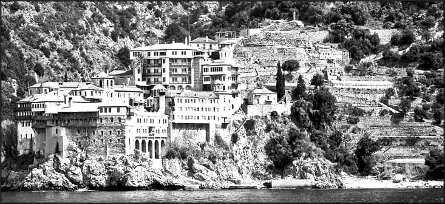
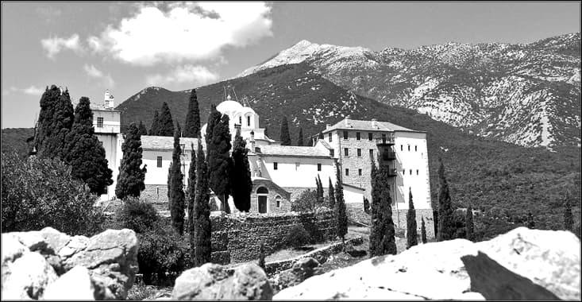
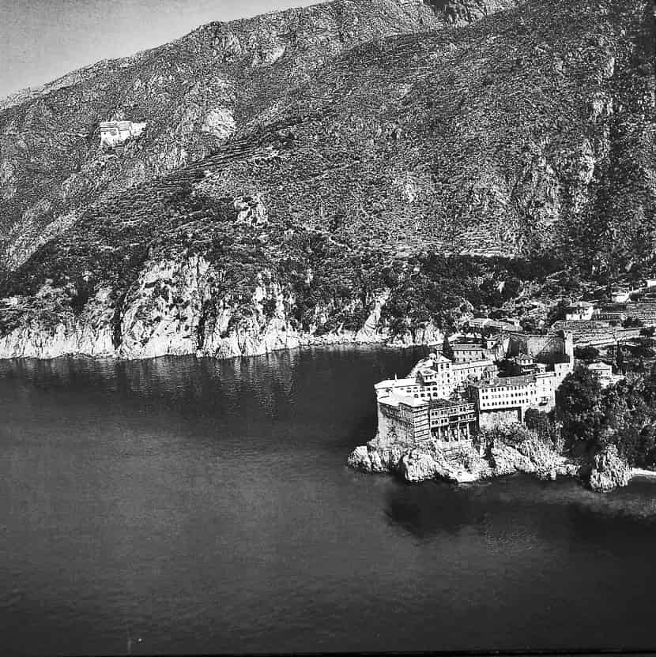

Dintre marile peninsule mediteraneene Grecia este cea mai săracă. Solul ei sterp, capriciile climei sunt neprielnice pentru agricultură, baza însăși a existenței umane. Dar în chiar acest aspect neprielnic vieții, acest popor curajos a găsit o salutară salvare în această nenorocire funciară care nu-i îngăduie să somnoleze într-o viață plină de înlesniri. Fixat pe un sol ingrat muncește din greu pentru a pune în valoare fiecare palmă de pământ fertil defrișând pădurea, acoperind cu terase coastele dealurilor și cele stâncoase ale munților. Aceasta este caracteristica fundamentală și a viețuitorilor din mănăstirile atonite.
Trăsătura caracteristică a acestei extreme înaintări a Balcanilor în Marea Egee și în Mediterana este predominanța munților ce acoperă 85% din suprafața solului. Marea este prezentă pretutindeni pătrunzând adânc în uscat, care se termină cel mai adesea prin faleze ce adăpostesc nenumărate porturi. Marea constituie adevărata cale de comunicație, deoarece compartimentarea solului face ca legăturile terestre să fie anevoioase. Ispita e cu atât mai mare datorită faptului că întreaga Eladă e înconjurată de insule ale căror creste sunt veritabile repere pentru navigație, iar micile porturi adăpostesc pitorești locuri ospitaliere pentru navigatori. Marea, căreia grecii i-au dat denumirea indo-europeană a podului (Pontos) este plină de primejdii, brăzdată de valuri năprasnice în anotimpurile reci, măturată de vânturi de la miazănoapte în timpul verii descumpănind mereu corăbierii prin subitele ei accese de mânie.
Clima mediteraneană, în general, în unele regiuni este temperat continentală datorită osaturii muntoase a solului. Iernile sunt aspre și verile deosebit de călduroase. Astfel, dacă la Atena temperatura variază în medie între 19 grade și 38 de grade, în Athos putem întâlni temperaturi între -2 și +42 de grade dar căldura este mai suportabilă din pricina vânturilor eleosiene și prezenței mării cu briza ei binefăcătoare. Versantul ionian al Greciei continentale este acoperit de întinse păduri de stejar până la 1200 m altitudine iar mai sus, de păduri de pini, de brazi și de fagi. Pe înălțimile Peloponesului occidental cad ploi abundente de unde și bogăția cursurilor de apă. La est de Pind numai munții cei înalți se bucură de precipitații în mai, bogate de altfel, iar Olimpul este acoperit de brazi și de castani în timp ce coamele Parnasului sunt înzăpezite până-n iunie ca și cele ale Atonului Regiunile cele mai joase cunosc o lungă și neîndurătoare epocă de sete ca și cea mai mare parte a peninsulei Athos. Practic în aceasta perioadă nu plouă niciodată.
Vânturile contribuie și ele la asprimea climei. Vara presiunea scăzută a Mediteranei aspiră aerul peninsulei Balcanice dând naștere vânturilor de nord care devastează zonele de câmpie și mătură Marea Egee alternând adesea cu răbufnirile arzătoare ale vânturilor sirocco de proveniență africană. Iarna rafalele violente de vânt răcesc brusc atmosfera. Câmpiile înguste și caracterul excesiv al climei sunt prea puțin prielnice agriculturii. Cel puțin în peninsula Athos această îndeletnicire este practicată extrem de puțin din cauza solurilor pietroase așa că se găsesc doar culturi de viță de vie și măslini dispuse pe terase și îngrădite de puținătatea locurilor mai drepte. De aceea s-a procedat de-a lungul sutelor de ani la terasarea muntelui pe acele puține porțiuni sau pe locurile mai așezate din zona litorală.
Sfântul Munte al Athonului este o peninsulă legată de acest pământ al Greciei în partea dinspre miazăzi având celelalte două părți legate de Marea Egee. Lungimea Sfântului Munte este de aproximativ 60 de km în timp ce lățimea variază între 12 și 18 km. Altitudinea vârfului Athonului este de 2040 m. Suprafața peninsulei este de circa 365 km pătrați, cam câte zile are un an. Athosul se identifică cu toți „munții Lui Dumnezeu” în care Cel Preaînalt s-a descoperit oamenilor: Muntele Sion, Muntele Sinai, Carmelul, Muntele Măslinilor și Golgota. Athosul este asemenea tuturor acestor munți, unde Domnul s-a odihnit întru Sfinții Lui (Psalmul 150, 1) în „adunare de dumnezei” (Psalmul XI I). „Să nu mor până ce nu văd Athosul”, își doresc monahii ortodocși. Inspirat este cuvântul unui monah aghiorit că „Muntele Athos este locul unde mulți oameni se pocăiesc și prin aceasta ei fac mereu bucurii în cer după cuvântul Scripturii” (Luca 15, 7). Rând pe rând, pe lângă apelativul „Sfântul Munte” acest munte se mai numește și Muntele Pocăinței. Uitându-se la Athon care se înalță falnic spre cer, lucrătorii pocăinței sunt îndemnați în chip firesc să se străduiască a se ridica tot mai sus pe calea desăvârșirii, adică să atingă idealul pocăinței depline. Athosul este însă și Muntele Schimbării La Față, sărbătoarea cea mai caracteristică a acestuia la care vor să participe toți monahii.
Incursiune în istorie
După relatările lui Tucidide, Plutarh, Homer, Apolloniu și ale altor autori antici, din timpurile precreștine și până la începutul secolului al III-lea î.Hr., au existat la Athos diferite orășele precum Sani, Thysson, Kleinai, Dion ș.a. Apoi, treptat, aceste așezări dispar, fără să putem cunoaște ce s-a întâmplat cu ele.
După spusele lui Plutarh, arhitectul Stasikrate și după Strabon, Deinokrate i-a propus lui Alexandru cel Mare (336-332 î. Hr.), care avea de gând să construiască un oraș în care să-și imortalizeze faima, să transforme Athosul în monumentul lui Alexandru spre slava măreției macedonene, ținând în mâna stângă un oraș: mulțimi de oameni, iar în cea dreapta un râu o duce la mare. Dar Alexandru cel Mare n-a acceptat planul, spunând lui Deinokrate: „Lasă Muntele cum este. E de ajuns că împăratul și-a eternizat semeția săpând canal printr-însul”, referindu-se la canalul pe care l-a făcut Xerxes la 481 î. Hr., prin mijlocirea inginerului său Vouvari, în expediția pe care a pornit-o împotriva Eladei cu 1200 de corăbii mari.
Nu se știe sigur când au venit primii monahi în Sfântul Munte Athos, dar se crede că ar fi venit odată cu Sfântul Apostol Ioan (101 d. Hr.), care o însoțise pe Maica Domnului în călătoria sa spre Athos. Această versiune vrea să spună că încă de la începuturile erei creștine, au debarcat aici sihaștrii din Asia Mica, poate și din Efes unde propovăduia Sfântul Apostol Ioan, și unde viața monahală, contemplativă, începuse să se manifeste de timpuriu.
N-am putea preciza când apar primele urme de viață monahală în Sfântul Munte, dar se pare că ea a apărut încă din timpul împăratului Constantin cel Mare (306-337 d. Hr.) și al împăratului Teodosie cel Mic (408-450 d. Hr). Sigur, chiar cu toată sihăstria lui, Athosul nu putea să rămână neinfluențat de puterea cuceritoare a creștinismului. De aceea, imaginea simbolică a povestirii Sfântului Grigorie Palama, că la sosirea la Athos a Maicii Domnului toți idolii s-au prăbușit cu putere în valurile mării, este semnificativă. Cu toată apropierea lui de vechile centre creștine cu origine apostolică, cum sunt: Filippi, Tesalonic, Bereea, Troia etc, Athosul nu ne-a păstrat până la sfârșitul secolului al VII-lea s-au începutul secolului al IX-lea urme de monahism. Acest fapt se datorează și multelor invazii barbare prin aceste ținuturi. Slavi, avari, bulgari, arabi, ca să nu mai pomenim de pirați care, începând din secolul al VI-lea și până în secolul al XIV-lea, roiau în jurul Athosului.
Arhimandritul Porfirie Uspenski, care a scris o monumentală istorie a Sfântului Munte, crede că în urma invaziei arabe asupra Macedoniei dintre anii 670-676, împăratul bizantin Constantin Pogonatul ar fi dat Athosul în seama unor călugări. Aceasta ar fi prima dată certă când apar călugări în Athos.
Pe vremea împăratului Teodosie (395 d. Hr.) și a soției sale Pulheria, existau câteva mănăstiri care însă au fost pustiite de barbari. Mai pe urmă, s-au construit multe mănăstiri, schituri, chilii și colibe. Începând cu primele decenii ale secolului al IX-lea monahismul aghiorit intră într-o nouă fază. Ahtosul își dobândește caracterul său de ținut exclusiv monahal, cu granițe bine determinate, cu organizarea administrativă proprie și cu capitală la Kareias.
Primul călugăr vestit care a atras în jurul său mulți admiratori în Athos a fost Sfântul Petru Atonitul, despre care unii cred că ar fi trăit la finele secolului al VII-lea (681-734), iar alții cred că a trăit în secolul al IX-lea.
Mai sigură e ultima variantă, căci se pare că el a fost generalul bizantin de sub împăratul Teofil (827-842 care părăsește lumea și, după ce scapă din închisoarea Samara, unde-l aruncase ultimul împărat iconoclast, se retrage în Athos, într-o peșteră de lângă mănăstirea Ivirilor de azi, unde trăiește 53 de ani în viață aspră pustnicească și bogată în minuni. Un vânător, rătăcindu-se, îl află și îi pune moaștele în mănăstirea Sfântului Climent de Ivir, întemeiată de el. Faptul pozitiv este așadar că pe la jumătatea secolului al IX-lea existau călugări în Athos. Scriitorul bizantin Genezios (secolul X), iar după el și anonimul Teofan Continuatus, care scria din porunca lui Constantin Porfirogenetul, povestesc că la restabilirea cultului icoanelor, în 842, erau în Constantinopol o mulțime de călugări, purtând în procesiune pe străzi icoanele sfinte, înclinăm a crede că unul dintre conducătorii călugărilor în procesiunea din Bizanț a fost Sfântul Petru Atonitul.
Pe la anul 869, cuviosul Eftimie din Tesalonic vine la Athos și întâlnește în jurul istmului acantic și în Megali Vigla pe alți doi monahi Petru Atonitul și Ioan Colovul (ciuntul), stabilit în Athos în anul 867, fiind vestit pentru sfințenia vieții sale. Pilda lui a fost urmată și de alți pustnici astfel că în scurt timp toate înălțimile munților au fost populate cu sihaștrii și monahi, râvnitori de viață îngerească prin post, priveghere și rugăciune în liniștea profundă a Sfântului Munte, în viața Sfântului Eftimie scrisă de ucenicul său Vasile, se spune că la venirea sfântului în Athos, a întâlnit destui călugări pe la istmul acantic. Unii scriitori îl și socotesc pe cuviosul Eftimie al II-lea întemeietor al monahismului athonit, după Sfântul Petru Athonitul.
În anul 885 împăratul Vasile Macedoneanul dă un hrisov prin care Ioan Colovu și ucenicii lui sunt opriți de a-și trece vitele în sud de Ierissos, Athosul rămânând ca locuință a călugărilor. Hărțuielile dintre coloviți și athoniți au continuat în întreg secolul al X-lea.
Pentru a se curma aceste certuri și pentru a se unifica într-o instituție puternică monahală, a trebuit să vină o persoană importantă ca Sfântul Atanasie, adevăratul întemeietor al monahismului athonit.
Sfântul Atanasie, după numele său de copilărie Avram, s-a născut la începutul secolului al X-lea în Trebizonda. Rămas orfan de mic, a fost crescut de o rudă a sa, un ofițer. În Constantinopol a cunoscut pe vestitul călugăr Mihail Maleinos, și pe nepoții lui: Generalul Nichifor Foca, mai pe urmă împărat (963-969), și Leon, mare demnitar imperial, care mai târziu îl vor ajuta în refacerea monahismului athnoit. Atras de viața cuvioasă pe care o ducea Mihail, Atanasie vine și rămâne în Muntele Chimina lângă părintele său duhovnicesc, unde se împrietenește de-a binelea cu credinciosul general Nichifor Foca, al cărui duhovnic devine în curând. Inițiindu-se îndeajuns în viața monahală, pe care-o lățise în jurul Constantinopolului, marele iconodul Teodor Studitul, Atanasie, care va fi auzit sigur că în Athos mai sunt monahi, a plecat cu un culion (scufie călugărească) a lui Mihail ca talisman și cu două manuscrise (Atanasie era și un caligraf distins). El se așează în chilia pe care i-o rânduise, la cererea lui Foca, Ștefan protosul de atunci al Sfântului Munte, cum zice Atanasie însuși în tipicon.
Atanasie din Trapezunt s-a stabilit la Athos în anul 963, înconjurat de coprovinciali apoi și de alți reprezentanți ai evlaviei particulare asiatice.
Generalul Nichifor Foca, trimis în expediție contra arabilor în Creta (960-961), îl roagă printr-o scrisoare pe Sfântul Atanasie să-i vină în ajutor prin rugăciune, promițându-i ajutoare pentru a clădi o mănăstire, ca unul ce vrea și el viața monahală, scârbit fiind de lume. Chiliile mănăstirii sunt gata până la 1 mai 963, când trimisul lui Foca îi aduce Sfântului Atanasie ajutoare bogate, precum și vestea că Generalul Nichifor a ajuns împărat și s-a căsătorit, urmând ca pe 16 august să fie întronat. Atunci Atanasie pleacă supărat la Constantinopol și-1 mustră că nu și-a ținut cuvântul de a deveni monah. Cu ajutoare și mai mari de la Nichifor și de la fratele lui Leon, Atanasie clădi Katholiconul (biserica principală), apoi celelalte dependințe. El mai primește și o cutie cu moaște sfinte și o bucată din Lemnul Sfânt.
Numărul monahilor atrași de personalitatea puternică a Sfântului Atanasie era la început de 80. Sfântul e pârât la împărat de către o delegație a celorlalți monahi pe care-i găsise el în Athos și care duceau o viață de aspră schimnicie, că le strică orânduielile și schimbă duhul călugăresc. Atanasie primește și de la urmașul lui Foca, Ion Tzimiskes daruri în moșii, bani, sfinte moaște, iar numărul monahilor crescu la 120. Respectul pentru Sfântul Atanasie a crescut și prin faptul că a fost învrednicit să săvârșească minuni, cum a fost aceea a găsirii apei din locul numit azi „Agheasmă”, precum și multe altele.
Atrași de faima lui Atanasie, vin în Athos o mulțime de monahi. Între ei se distinge boierul georgian Ioane de la curtea regelui David, împreună cu fiul său Eftimie. Mai târziu vine aici și un văr de-al lui Ioane, Ion Tornikios, un mare general.
Pentru că nu mai încăpeau în Lavra, Ion Eftimie și Ion Tornikios se retrag la o milă depărtare spre nord de Marea Lavră. Ca intim urmaș al Sfântului Atanasie, era desemnat Ioane, ivirul. Între cele dintâi mănăstiri care se adaugă Lavrei, se înscrie cea a Ivirilor, care pomenește ca întemeietor și pe Ioan Tornikios, Ivir și el, și pe Barasbatze, al cărui nume îi arata obârșia.
Despre Sfântul Atanasie mai pomenește doar o întâmplare în legătură cu moartea sa (între 997 și 1011). La această dată e pomenit urmașul său Eustrație. Sfântul Atanasie voia să ridice la cupolă o piatră de încheiere a zidurilor, când deodată se prăbuși cu alți 6 meșteri, sub dărâmături, în secolul al XVIII-lea el este pus în rândurile sfinților, iar Marea Lavră adoptă ca hram ziua de 5 iulie, când se prăznuiește pomenirea sfântului.
Cum am văzut, mai înainte de a veni Atanasie existase în Athos o viață călugărească cu un pronunțat caracter anahoret. Dar în zidurile groase ale mănăstirii, în daniile crescânde ale împăraților și în numărul așa de covârșitor al monahilor nu puteau vedea acești anarhoreți decât un semn de burghezie și de călcare a predaniilor. Biograful lui Eftimie Ivirul spunea despre Atanasie că „zidește case luxoase, strică vechile tradiții de înfrânare și parcă schimbă Athosul într-un ținut lumesc, încât a izbucnit o mare ceartă între monahi”. Se cerea intervenția împăratului. Astfel, Ion Tzimiskes trimite în Athos pe călugărul studit Eftimie care formulează normele după care se va conduce de acum comunitatea călugărilor. Hotărârile acestea însemnează consacrarea oficială și extinderea peste întreg Athosul a concepției lui Atanasie. Ele s-au scris, în anul 970, pe piele de țap și se păstrează în arhiva Sfântului Munte din Karies. Ele formează primul tipicon al Athosului.
Călugării sunt, după acest tipicon, de două feluri: cu viață de obște și pustnici.
Epoca de aur a monahismului athonit s-a desfășurat între anii 963 și 1453, când a fost sub directa supraveghere și întreținere a împăraților bizantini. Am văzut cum mai mulți boieri georgieni au întemeiat încă pe vremea Lavrei, strălucitoarea „mănăstire a Ivirilor” în anul 972. Ca a treia în ordine cronologică apare, înainte de anul 1000, mănăstirea Vatoped, întemeiată cu permisiunea Sfântului Atanasie de către trei frați din Adrianopol. Tot din acea vreme se cunoaște mănăstirea Filoteu, cum pomenește în anul 992 un document al Lavrei.
De la începutul secolului al XI-lea datează mănăstirea de lângă istmul Akantic, Esfigmen. Contemporane mai sunt și mănăstirile: Dohiar, Xenofon și Xiropotam. Ceva mai târziu apar (înainte de 1100) mănăstirile Caracalu și Constamonitu. Pentru a întări autoritatea protosului în Sfântul Munte, împăratul Constantin Monomahul a dat în 1046 un al II -lea tipicon.

În secolul al XII-ea s-au mai înființat o serie de mănăstiri, de această dată slave: Zograful (1100), Kusiconul sau Sfântul Pantelimon (1143) și Hilandarul (1197).
În urma cuceririi Bizanțului de către latini (1204), aceștia se așează în Constantinopol, dar peninsula Chalcidică nu depindea de acum înainte de noul împărat, ci de regele italian din Salonic, care a îngăduit baronilor și episcopilor săi a-și clădi castelul în fața zidurilor mănăstirilor de-o intransigentă ortodoxie, care trebuiau să plătească dajdii neobișnuite până atunci. Pe când episcopul catolic de Samaria (Sebastia) exercita drepturi episcopale la Athos, călugării intransigenți aveau să sufere prigoniri și închisori de la comandantul garnizoanei france, ca acel Macarie din „Muntele cel Bun” în (Kalorites). În sfârșit, la 1210, după o nouă hotărâre pontificală, o garnizoană latină fu așezată în castel de împăratul Henric, sub un șef feudal care depindea de Salonic. La urmă, Athosul pare să fi scăpat însă și de acesta, cum scăpă de tizurpația catalanului Berenguer d’Entenca. Apoi, după ce, în aceste regiuni, fiind înfrânți „imperialii” greci din Epir, puterea trecu asupra țarului din Târnovo, Ioan Asan. El încercă să impună supremația mitropolitului bulgar din Salonic, dar se izbi de opoziția călugărilor athoniți.
Se păstrează în arhivele Sfântului Munte o serie de rapoarte în care monahii aghioriți arată cum au fost supuși la chinuri și silnicii din partea împăratului Mihail al VIII-lea Paleologul și a partidei unioniste în frunte cu patriarhul Ion Beccos. Călugării din Sfântul Munte n-au vrut să primească unirea cu Biserica romano-catolică pe care partida unionistă o săvârșise în 1274 la Lyon. Drept pedeapsă, armata, condusă de împărat și împreună cu patriarhul au debarcat în Athos și, afară de mănăstirile Lavra și Xiropotam, care îi primiră cu fast deosebit și cu celebrarea Liturghiei cu azimă, celelalte mănăstiri au fost pustiite, iar călugării au fost martirizați. Aceste fapte grave, pe care le recunosc chiar publicațiile oficiale romano-catolice, ridicară un val de indignare în întreaga peninsulă a Sfântului Munte Athos. Toate revocările papale nu mai ajută la nimic și încercările de unire și de supremație ale Vaticanului eșuează. Unirea devine, astfel, atât de odioasă, iar Vaticanul și emisarii săi dovedesc a fi atât de mari dușmani ai călugărilor athoniți, încât papa Honorius al III-lea califică, în 1223, pe acești călugări ca „neascultători scaunului Apostolic și rebeli”. Totuși Papa va încerca mereu să pună stăpânire pe Sfântul Munte, știind că prin el pune mâna pe una din redutele tari ale Ortodoxiei. Istoricii catolici neagă veridicitatea acestor fapte, încercând să sugereze că rapoartele din Sfântul Munte confundă faptele întâmplate cu invazia celor 6000 de catalani catolici care la fel au prădat Athosul între anii 1307-1309.
Paleologii aduseseră cu ei nu numai trecătoare încercări de unire cu Roma ci și legătura cea mai strânsă cu Patriarhia Ecumenică, care, într-adevăr, timp de aproape 200 de ani, supusese Athosul necontenit pentru folosul și prestigiul imperiului. De la început, după prada aventurierilor catalani, Athosul a fost sacrificat. Actul de la 1312 îl supune autorității „Bisericii celei Mari”, în această înțelegere dintre împăratul Andronic al II-lea Paleologul și Patriarhul Nifon I se hotărăște ca de acum încolo protosul să fie supus numai puterii patriarhului. Astfel, treptat se va instaura în Sfântul Munte, rânduiala idioritmică.
În a doua jumătate a secolului al XIV-lea, nou-înființatele mănăstiri Cutlumuș, Pantocrator, Sfântul Pavel, Grigoriu, Simonpetra și Dionisiu, ca și Stavronichita, care va apărea doar pe la 1540, vor completa colegiul celor 20 de mănăstiri care stăpânesc întreg Athosul.
Prin idioritmie (stil propriu de viață), treptat, încep să se încalce două din voturile călugărești: al sărăciei și al ascultării. Nu putem însă vorbi de o încălcare absolută. S-a susținut că idioritmia s-a introdus din cauza vitregiilor vremii (pirați, cruciați). S-ar adăuga și dominația turcească, care, a despuiat mănăstirile de orice venit.
Starea de lucruri provoacă îngrijorări, de aceea protosul Dometie și cu Grigorie, egumenul Lavrei, se plâng patriarhului ecumenic Antonie. Acesta dă în mai un tomos, pe care istoria îl consideră ca al III-lea tipicon al Sfântului Munte. El prevede că toți egumenii mănăstirilor sunt datori a-l cinsti pe protos plătindu-i după posibilitățile fiecărei mănăstiri, un tribut anual. Ca o întărire a acestui tipicon, Manuil Paleologul publică în 1406 un hrisov care consfințește starea de fapt a idioritmiei. El este socotit ca al IV-lea tipicon, iar prin el călugării sunt învoiți să moștenească, să câștige și să transmită și altora averea personală câștigată în viața de mănăstire. Astfel, tipiconul prevedea: „întrucât la monahi se găsesc unele proprietăți - o parte din rentă poate fi înstrăinată să le folosească în viață, iar la moarte să fie ale mănăstirii”. Cu accentuarea „individualismului” material, idioritmia se încetățenește la Sfântul Munte și în tot Orientul.
Chiar înainte de căderea Constantinopolului (1453), Sfântul Munte Athos se supune de bunăvoie turcilor. Sultanul Murad al II-lea (1421-1451) îi acordă unele privilegii: să nu se stabilească mahomedani acolo, să nu aibă acces femeile ș.a. După căderea Constantinopolului, Sfântul Munte Athos a stat timp de 500 de ani sub stăpânire otomană. În urma unei convenții încheiate între conducerea Athosului și sultan, fiecare mănăstire plătea un bir anual la Poartă și astfel Sfântul Munte rămânea liber și practic neocupat de turci. Mai mult, turcii păzeau Athosul și dădeau voie călugărilor din toate țările ortodoxe să vină acolo și să se organizeze după cum vor. Acest lucru a permis monahismului athonit să reziste bine sub ocupația otomană și să prospere, în perioada postbizantină.

În secolele XV-XIX, grija întreținerii Sfântului Munte și a plătirii birurilor către Poartă a trecut în întregime în seama celor două țări românești Moldova și Țara Românească. Fără ajutorul important material și moral al țărilor noastre, marile mănăstiri athonite, care nu mai aveau fonduri să-și plătească marele bir anual către turci și nici alte venituri pentru întreținere și reparații, ar fi dispărut și odată cu ele și imensul tezaur spiritual și cultural care se păstrează în Sfântul Munte. Dar grija Proniei Divine a intervenit la timp prin mila țărilor române și a salvat de la pustiire Athosul.
În urma introducerii idioritmiei în mănăstiri au început să apară certuri pentru averi și metoace. Văzând această stare de lucruri, o seamă de egumeni se plâng patriarhului ecumenic Ieremia al II-lea. Acesta trimite pe Silvestru în Athos să îndrepte lucrurile. Astfel în 1574 apare și sighilionul dat de cei doi pentru venirea la viața de obște, și care formează tipiconul al V-lea. Rezultatul a fost totuși efemer. Încă de pe la 1660 conducerea din Karies era încredințată unei comisii de proistameni, care luase în mână administrarea generală a Sfântului Munte în locul vechii instituții a protosului.
Importante pentru viața Sfântului Munte au fost hotărârile aduse în anul 1783 de patriarhul ecumenic Gavriil, hotărâri care formează tipiconul al VI-lea. Acesta, văzând multele peripeții prin care au trecut lăcașurile athonite, fixează o epitropie din patru membrii aleși dintre delegații celor 20 de mănăstiri. Mănăstirile sunt împărțite în cinci tetrade. Durata Epistasei e de un an. Ea e organul executiv al comunității, compusă din cei 20 de delegați ai mănăstirilor. Tipiconul mai prevedea oprirea călugărilor de a mai părăsi Sfântul Munte fără a se justifica în fața Epistasei. Ca rezultat al tipiconului din 1783, unsprezece mănăstiri revin în decurs de aproape un secol la viața de obște. Celelalte rămân și pe mai departe idioritmice.
O dispoziție nouă - ivită în urma conflictelor greco-ruse de la finele veacului al XIX-lea - este aceea că nu se mai poate înființa pe viitor nici o mănăstire nouă. În acest sens, regulamentul din 1924, azi în vigoare, este doar o compilație după cele dinainte.
În anii 1821-1832, Aghion Oros a avut o participare importantă în revoluția națională, întărind-o economic prin vânzarea și valorificarea prețioaselor comori ce erau păstrate până atunci în mănăstiri.
După unirea Principatelor Române (1859) și după secularizarea averilor mănăstirești (1863), ajutoarele românești în afara hotarelor țării încetează. În anul 1912 Muntele Athos intră sub tutela și administrația Greciei, eliberându-se astfel de sub protectoratul Turciei după 5 secole de ocupație, în anul 1923 protectoratul Greciei este recunoscut de Marile Puteri prin Tratatul de la Londra. Foarte interesantă este declarația guvernatorului turc al Athosului, adresându-se unui ziarist francez în ajunul eliberării Athosului de către Grecia, în 1912: „Sub guvernarea noastră ei s-au bucurat de aceeași libertate, chiar de mai multă libertate decât sub împărații bizantini… Cu siguranță ne vor regreta, Monsieur”. Demnitarul turc avea, în general, multă dreptate, în afara câtorva perioade mai grele de după războiul grec de independență din 1920, sultanii „au respectat întotdeauna drepturile sfinților din Athos”.
După primul război mondial, mănăstirilor athonite li s-a recunoscut autonomia în cadrul statului suveran grec, prin Tratatul de la Sevres (1920, ratificat la Lausanne în 1923), din punct de vedere spiritual continuând a rămâne sub conducerea Patriarhului ecumenic. Reglementarea administrării Sfântului Munte Athos s-a precizat prin Charta constituțională aprobată de adunarea călugărilor la 10 mai 1924 și completată prin Decretul guvernului grec de la 10 septembrie 1926, care acordau guvernatorului Muntelui Athos puteri reale.
Guvernul grec a promulgat, la 20 februarie 1969, o nouă legislație cu privire la Muntele Athos, prin care se acorda guvernatorului dreptul de a putea efectua percheziții și control înăuntrul mănăstirilor, pentru a putea asigura protecția comorilor mănăstirilor, a operelor de artă și a manuscrisurilor pe care le conțin mănăstirile.
Prevederile noii constituții grecești cu privire la administrarea Muntelui Athos, - Articolul 122:
- Peninsula Athos care formează teritoriul Muntelui Athos constituie, în conformitate cu vechiul său statut privilegiat, o parte descentralizată a statului grec a cărui suveranitate asupra acestui teritoriu rămâne intactă. Toți cei ce duc viață monastică în Muntele Athos dobândesc, îndată ce sunt admiși ca novici sau monahi, naționalitatea greacă, fără nici un fel de formalitate în plus.
- Muntele Athos este administrat, în conformitate cu statutul său, de cele 20 de mănăstiri, între care este împărțită întreaga peninsulă Athos, al cărei sol este inalienabil. Administrația este exercitată prin reprezentanții mănăstirilor care formează Sfânta Comuniune. Este cu desăvârșire interzisă orice modificare a sistemului administrativ sau a numărului de mănăstiri din Muntele Athos. Stabilirea neortodocșilor și a schismaticilor în Muntele Athos este interzisă.
- Precizarea în detaliu a regimului Muntelui Athos se face prin Charta Constituțională a Muntelui, care este redactată și votată de cele 20 de mănăstiri, cu colaborarea reprezentantului statului și ratificată de Patriarhia Ecumenică și de Camera Deputaților Statului Grec.
- Observarea aplicării exacte a regimului Muntelui Athos este așezată sub supravegherea Patriarhiei Ecumenice, din punct de vedere spiritual, iar din punct de vedere administrativ sub supravegherea Statului Grec, căruia îi revine în chip exclusiv menținerea ordinii și a securității publice.
- Puterile menționate ale statului sunt exercitate în limitele Chartei Constituționale a Muntelui printr-un guvernator, ale cărui drepturi și datorii sunt precizate prin lege. De asemenea sunt precizate prin lege puterea judiciară, ca și prerogativele vamale și fiscale pentru Athos executate de către autoritățile mănăstirești și de către Sfânta Comunitate.
În urma celui de-al doilea Război Mondial, dificultățile economice prin care trec mănăstirile din Sfântul Munte se fac din ce în ce mai simțite. Aceasta se întâmplă de pe urma faptului că aproape toate proprietățile mănăstirești din afară de peninsula athonită, ale diferitelor mănăstiri, au fost expropriate.
Numărul monahilor a variat de-a lungul secolelor. Astfel la sfârșitul secolului al X-lea era de 1000, iar în anul 1020 era de 3000. După 30 de ani, numărul călugărilor era de 6000, numărul mănăstirilor era 180. După căderea Constantinopolului (1453) numărul călugărilor a scăzut la 1500. Iată numărul călugărilor în anul 1920: ruși 4800; greci 3900; români 500; bulgari 500; sârbi 150; georgieni 50. Din 1920 până în 1970 numărul călugărilor a scăzut de la 10.000 la 1146. în anul 2004 erau 2500 de călugări. Numărul actual al mănăstirilor este de 20, iar schituri sunt 12. Numărul chiliilor nu se știe exact, deoarece au fost foarte multe părăsite și s-au dărâmat.

Comentarii